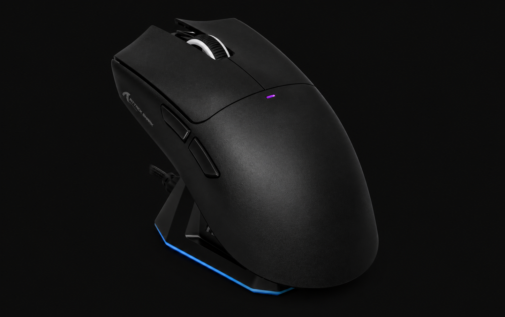
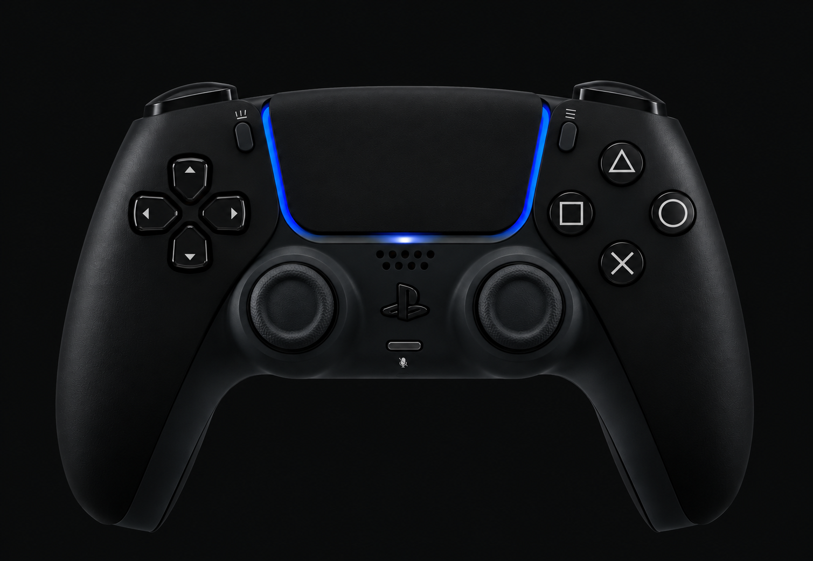

Исследование влияния условий беспроводной связи на задержку ввода игровых устройств в Counter-Strike 2
Исследовательский проект
Проект подготовил: Ал-Адхами Иван М.
1. Актуальность исследования
В современных компьютерных играх, особенно в соревновательных шутерах, важную роль играет задержка между действием пользователя и соответствующей реакцией системы
Беспроводные игровые устройства передают команды с помощью радиосигналов. На качество беспроводной связи могут влиять расстояние до приёмника, наличие препятствий, расположение оборудования и другие источники радиопомех.
Поэтому изучение влияния условий беспроводной связи на результаты измерений задержки представляет практический интерес для пользователей игровых устройств.
2. Цель исследования
Экспериментально исследовать, как расстояние между беспроводным игровым устройством и его USB-приёмником, а также условия работы Wi-Fi роутера в диапазонах 2,4 и 5 ГГц связаны с измеряемой задержкой и стабильностью передачи данных.
3. Задачи исследования
- Изучить понятие input lag и причины его возникновения.
- Рассмотреть принципы работы беспроводных устройств.
- Подготовить оборудование и условия эксперимента.
- Провести измерения при разных условиях и расстояниях.
- Сравнить результаты, построить графики и сформулировать выводы.
4. Гипотеза исследования
Предполагается, что изменение расстояния между игровым устройством и его приёмником, а также изменение условий работы Wi-Fi могут влиять на стабильность беспроводной связи и результаты измерений задержки. При этом характер и величина возможных изменений будут определены экспериментально.
5. Объект и предмет исследования
Объект: передача команд от беспроводных игровых устройств к компьютеру.
Предмет: изменение измеряемой задержки ввода при различных условиях тестирования.
6. Теоретическая часть
Input lag — задержка между действием пользователя и реакцией системы. На неё могут влиять само устройство, передача сигнала, обработка данных компьютером и отображение изображения на мониторе.
Беспроводные устройства передают данные с помощью радиосигналов. На качество связи могут влиять расстояние, препятствия и другие источники радиопомех. В ходе исследования будет проверено, связаны ли эти условия с результатами измерений.
7. Оборудование
- Компьютер с Counter-Strike 2.
- Мышь Attack Shark X11 с USB-приёмником.
- Wi-Fi-роутер с диапазонами 2,4 и 5 ГГц.
- Игровой контроллер PlayStation для дополнительного эксперимента.
- Средства измерения и таблица для записи результатов.
- Разработанный сайт для ввода и обработки результатов эксперимента, расчёта медианных значений задержки и построения графиков для сравнения полученных данных. Открыть сайт измерений


8. Методика эксперимента
- Подготовить оборудование и зафиксировать исходные условия эксперимента.
- Выбрать способ измерения задержки и определить единицы измерения.
- Провести пять повторных измерений для выбранного диапазона Wi-Fi и расстояния.
- Повторить измерения при другом диапазоне Wi-Fi, сохраняя остальные условия по возможности одинаковыми.
- Изменить расстояние до приёмника и повторить серию измерений.
- Записать результаты в таблицу, рассчитать средние значения и сравнить их.
- Построить графики, проанализировать результаты и сформулировать выводы.
- Для корректного сравнения необходимо по возможности сохранять одинаковыми настройки устройства, частоту опроса, положение оборудования и условия проведения испытаний.
- Каждый результат следует записывать с указанием метода измерения и единиц измерения.
Во время эксперимента необходимо сохранять остальные условия по возможности одинаковыми. Переключение диапазона Wi-Fi само по себе не гарантирует изменения задержки мыши.
9. Результаты эксперимента
В таблице будут представлены результаты измерений задержки ввода при различных условиях эксперимента.
| Wi-Fi | Расстояние | Попытка 1 | Попытка 2 | Попытка 3 | Попытка 4 | Попытка 5 |
|---|---|---|---|---|---|---|
| 2,4 ГГц | 50 см | |||||
| 2,4 ГГц | 100 см | |||||
| 2,4 ГГц | 150 см | |||||
| 5 ГГц | 50 см | |||||
| 5 ГГц | 100 см | |||||
| 5 ГГц | 150 см |
Для каждого сочетания диапазона Wi-Fi и расстояния проводится пять попыток. Всего запланировано 30 измерений. Результаты будут использованы для сравнения условий эксперимента и построения графиков.
10. Выводы
После проведения эксперимента будут проанализированы результаты и определено, наблюдаются ли различия между выбранными условиями тестирования.